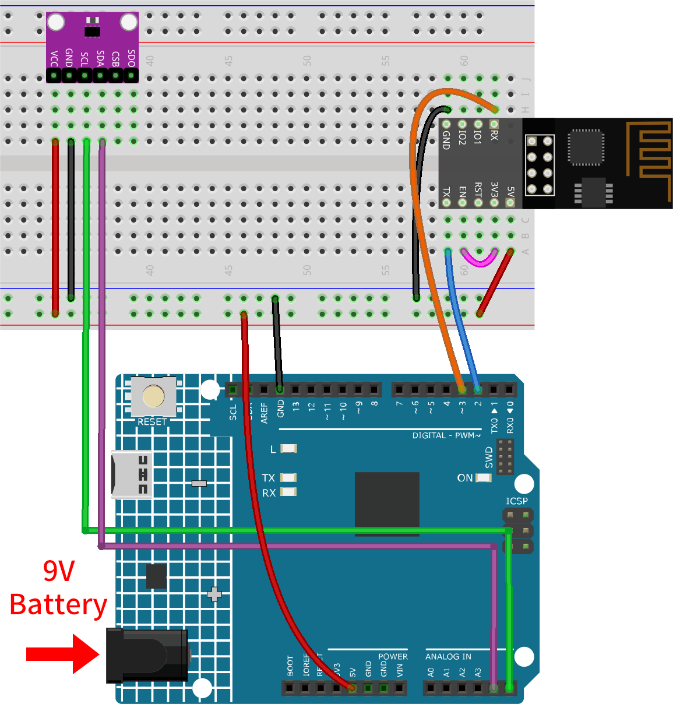
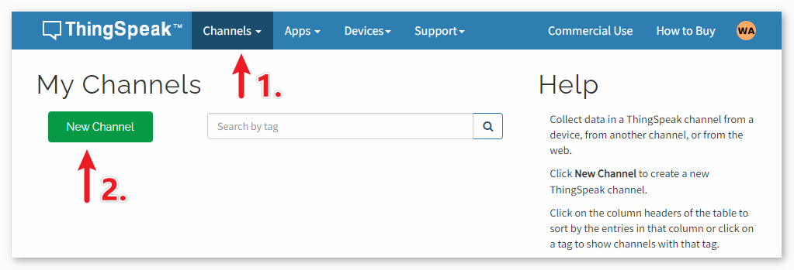

Note
Hello, welcome to the SunFounder Raspberry Pi & Arduino & ESP32 Enthusiasts Community on Facebook! Dive deeper into Raspberry Pi, Arduino, and ESP32 with fellow enthusiasts.
Why Join?
Expert Support: Solve post-sale issues and technical challenges with help from our community and team.
Learn & Share: Exchange tips and tutorials to enhance your skills.
Exclusive Previews: Get early access to new product announcements and sneak peeks.
Special Discounts: Enjoy exclusive discounts on our newest products.
Festive Promotions and Giveaways: Take part in giveaways and holiday promotions.
👉 Ready to explore and create with us? Click [here] and join today!
Weather Monitor with ThingSpeak
This project collects temperature and pressure data using an Atmospheric Pressure Sensor. The collected data is then transmitted to the ThingSpeak cloud platform via an ESP8266 module and Wi-Fi network at regular time intervals.
1. Build the Circuit
Note
The ESP8266 module requires a high current to provide a stable operating environment, so make sure the 9V battery is plugged in.


2. Configure ThingSpeak
ThingSpeak ™ is an IoT analytics platform service that allows you to aggregate, visualize and analyze live data streams in the cloud. ThingSpeak provides instant visualizations of data posted by your devices to ThingSpeak. With the ability to execute MATLAB® code in ThingSpeak you can perform online analysis and processing of the data as it comes in. ThingSpeak is often used for prototyping and proof of concept IoT systems that require analytics.

2.1 Creating ThingSpeak Account
The first thing you need to do is to create an account with ThingSpeak. Since the collaboration with MATLAB, you can use your MathWorks credentials to login to ThingSpeak .
If you do not have one, you need to create an account with MathWorks and login to ThingSpeak Application.

2.2 Creating the channel
After logging in, create a new channel to store the data by going to “Channels” > “My Channels” and clicking on “New Channel”.


For this project, we need to create a channel called “Weather Monitor” with two fields: Field 1 for “Temperature” and Field 2 for “Atmospheric Pressure”.

3. Run the Code
Open the
05-Weather_monitor.inofile under the path ofultimate-sensor-kit\code\iot_project_esp01\wifi\05-Weather_monitor, or copy this code into Arduino IDE.Note
To install the library, use the Arduino Library Manager and search for “Adafruit BMP280” and install it.
You need to enter the
mySSIDandmyPWDof the WiFi you are using.String mySSID = "your_ssid"; // WiFi SSID String myPWD = "your_password"; // WiFi Password
You also need to modify the
myAPIwith your ThingSpeak Channel API key.String myAPI = "xxxxxxxxxxxx"; // API Key

Here you can find your unique API KEY that you must keep private.
After selecting the correct board and port, click the Upload button.
Open the Serial monitor(set baudrate to 9600) and wait for a prompt such as a successful connection to appear.


4. Code explanation
The ESP8266 module that comes with the kit is already pre-burned with AT firmware. Therefore, the ESP8266 module can be controlled through AT commands. In this project, we use software serial to enable communication between the Arduino Uno board and the ESP8266 module. The Arduino Uno board sends AT commands to the ESP8266 module for network connection and sending requests. You can refer to ESP8266 AT Instruction Set.
The Uno board reads sensor values and sends AT commands to the ESP8266 module. The ESP8266 module connects to a network and sends requests to ThingSpeak servers.
Setting Up & Global Variables:
This section establishes communication with the ESP8266 module and declares necessary global variables.
#include <SoftwareSerial.h> SoftwareSerial espSerial(2, 3); #define DEBUG true String mySSID = "your_ssid"; String myPWD = "your_password"; String myAPI = "xxxxxxxxxxxx"; String myHOST = "api.thingspeak.com"; String myPORT = "80"; unsigned long lastConnectionTime = 0; const unsigned long postingInterval = 20000L;
BMP280 Sensor Setup:
This code segment sets up the BMP280 sensor for data reading.
#include <Wire.h> #include <Adafruit_BMP280.h> #define BMP280_ADDRESS 0x76 Adafruit_BMP280 bmp; unsigned bmpStatus; float pressure; float temperature;
Initialization (Setup Function):
The
setup()function initializes serial communication, connects the ESP8266 module to Wi-Fi, and initializes the BMP280 sensor.void setup() { Serial.begin(9600); espSerial.begin(115200); // Initialize the ESP8266 module sendATCommand("AT+RST", 1000, DEBUG); //Reset the ESP8266 module sendATCommand("AT+CWMODE=1", 1000, DEBUG); //Set the ESP mode as station mode sendATCommand("AT+CWJAP=\"" + mySSID + "\",\"" + myPWD + "\"", 1000, DEBUG); //Connect to WiFi network // Initialize the bmp280 sensor bmpStatus = bmp.begin(BMP280_ADDRESS); if (!bmpStatus) { Serial.println(F("Could not find a valid BMP280 sensor, check wiring or " "try a different address!")); while (1) delay(10); // Stop code execution if the sensor is not found. } /* Default settings from datasheet. */ bmp.setSampling(Adafruit_BMP280::MODE_NORMAL, /* Operating Mode. */ Adafruit_BMP280::SAMPLING_X2, /* Temp. oversampling */ Adafruit_BMP280::SAMPLING_X16, /* Pressure oversampling */ Adafruit_BMP280::FILTER_X16, /* Filtering. */ Adafruit_BMP280::STANDBY_MS_500); /* Standby time. */ }
loop() function:
The main loop checks if 20 seconds have passed since the last data transmission. If so, it sends the data. You can modify the value of the
postingIntervalvariable to adjust the interval at which data is sent.void loop() { //Send data according to the time interval you set. if (millis() - lastConnectionTime > postingInterval) { sendData(); } }
Data Transmission:
This function reads the temperature and pressure, constructs the GET request, and sends data to ThingSpeak.
We constructed a GET request in the form of
GET /update?api_key=xxxxxx&field1=xx&field2=xxxxxxand sent three parameters to the ThingSpeak server.api_key: API key for authentication and permission controlfield1: a parameter named “field1” used to record temperaturefield2: a parameter named “field2” used to record atmospheric pressure
void sendData() { // Read the temperature and pressure from the BMP280 sensor pressure = bmp.readPressure(); temperature = bmp.readTemperature(); // If the data is invalid, print an error message and stop sending it if (isnan(pressure) || isnan(temperature)) { Serial.println("Failed to read from BMP sensor!"); return; } // Construct the GET request for ThingSpeak String sendData = "GET /update?api_key=" + myAPI; sendData += "&field1=" + String(temperature); sendData += "&field2=" + String(pressure); // Send the GET request to ThingSpeak via the ESP8266 sendATCommand("AT+CIPMUX=1", 1000, DEBUG); //Allow multiple connections sendATCommand("AT+CIPSTART=0,\"TCP\",\"" + myHOST + "\"," + myPORT, 1000, DEBUG); // Start a TCP connection to ThingSpeak sendATCommand("AT+CIPSEND=0," + String(sendData.length() + 4), 1000, DEBUG); // Send the GET request espSerial.find(">"); // Wait for the ">" character from the ESP8266 espSerial.println(sendData); // Send the GET request Serial.println(sendData); // Print the values Serial.println("Value to be sent: "); printBMP(); // Call the printBMP function to print the temperature and pressure sendATCommand("AT+CIPCLOSE=0", 1000, DEBUG); // Close the TCP connection lastConnectionTime = millis(); // Update the last connection time }
Helper Functions:
These functions assist in sending AT commands to the ESP8266 and print the BMP280 sensor readings.
void sendATCommand(String command, const int timeout, boolean debug) { ... // (refer to the provided code for the full sendATCommand function) } void printBMP() { ... // (refer to the provided code for the full printBMP function) }
Reference